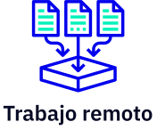

Hello world pale blue dot
un podcast que explora el mundo de la programación. Nuevos episodios, todo los jueves cada 15 días.
Episodios

De dónde venimos
posturings, our imagined self-
importance, the delusion that we have some privileged position in
the universe, are challenged by this point of pale light.
Our planet is a lonely speck in the great enveloping cosmic dark.
In our obscurity, in all this vastness, there is no hint that
help will come from elsewhere to save us from ourselves.
Invitadas/os estelares


Algunos de nuestros temas
